A brick, and a system for building with it.
On its own a SeaBrick is a small thing. Locked to thousands of others it is a platform, a breakwater, a dock or a foundation. This page has two parts: the shape and how bricks fit together, and the material. How both got here is on the evolution page.
Geometry and design

Hexagonal, hollow, buoyant.
A SeaBrick is a hexagon about one and a half times as wide as it is tall. Hexagons tile with no gaps and give every brick six equal neighbours. Each side locks smoothly to the next brick. The top and bottom register with the course above and below. The hollow inside makes it float; the dense shell carries the loads where bricks meet.
A brick is moulded in one cycle, so it can be made in a small plant close to where it is used. The design has been through more than twenty versions since 2022. The evolution page shows them.
- Floats
- Locks to six neighbours
- Stacks in courses
- Moulded, not machined
- Replaceable one at a time


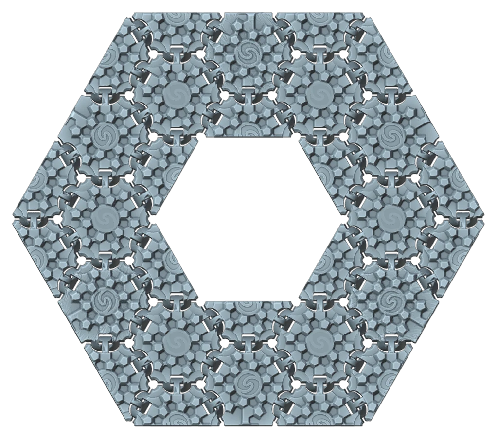
Seven ways to build with SeaBrick
The same brick, arranged seven ways. The 3D views are live. Drag to turn, scroll to zoom, click a brick to name it.
One brick, six neighbours
Each brick locks to six neighbours in its course and to the courses above and below. The smooth side locking, together with the hexagonal geometry, gives connected bricks a structural fluidity: individual bricks are rigid, but an assembly flexes and absorbs the forces of the sea. Half bricks, edge bricks and bridges close the edges and tie the courses. The connection lab shows how a joint behaves under load.
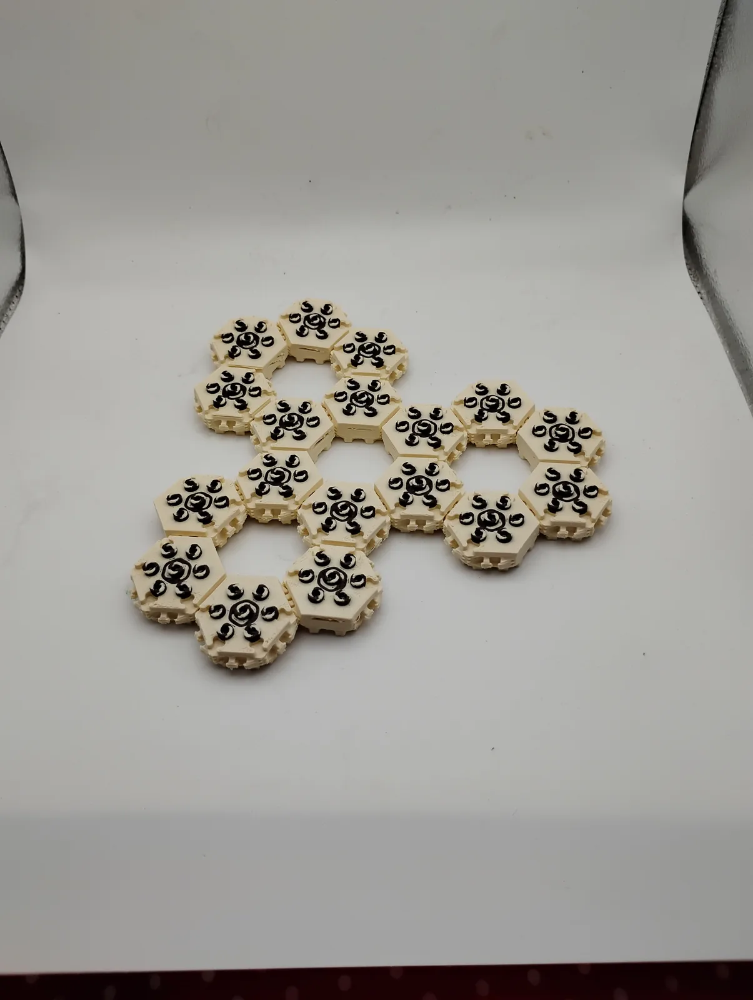
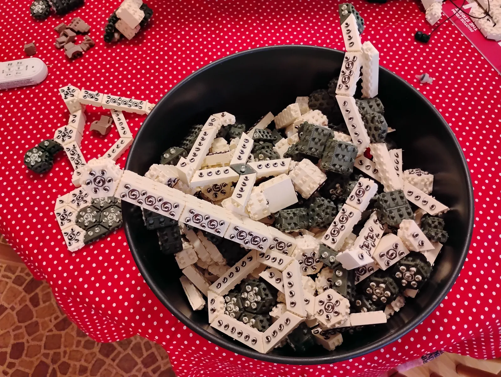
Photos: model bricks, 2026.
Floating mats
One course of bricks laid flat is a mat: a floating deck in any shape the hex grid allows, strong but flexible, like chainmail. Each course sits in one of three positions, A, B or C, so it bridges the joints below. Mats are the first things we will build: work floats, aquaculture platforms and docks.

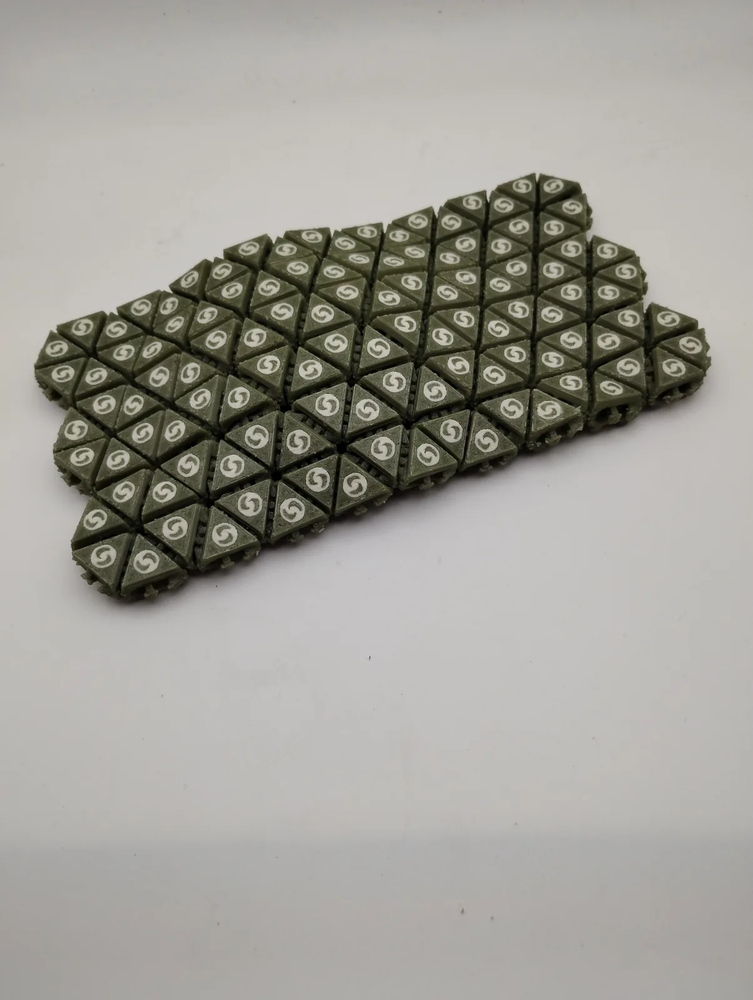
Photos: model bricks, 2026.
Tubes and towers
Bricks laid in a ring, course on course, make a hollow tube. Keep going and it is a tower. Tubes are stiff for their weight. At the SeaBrick party they were the first thing almost everyone built. In a floating structure they become pontoons, piles, culverts and the legs of a platform. Hollow bricks can be filled with rock for ballast.


Photos: model bricks, 2026.
Walls and enclosures
Straight runs of wall bricks between corners make the sides of an enclosure: a barge hull, a breakwater face, a tank for fish or seaweed. In the builder, gold marks the bricks whose flat faces form the wall.

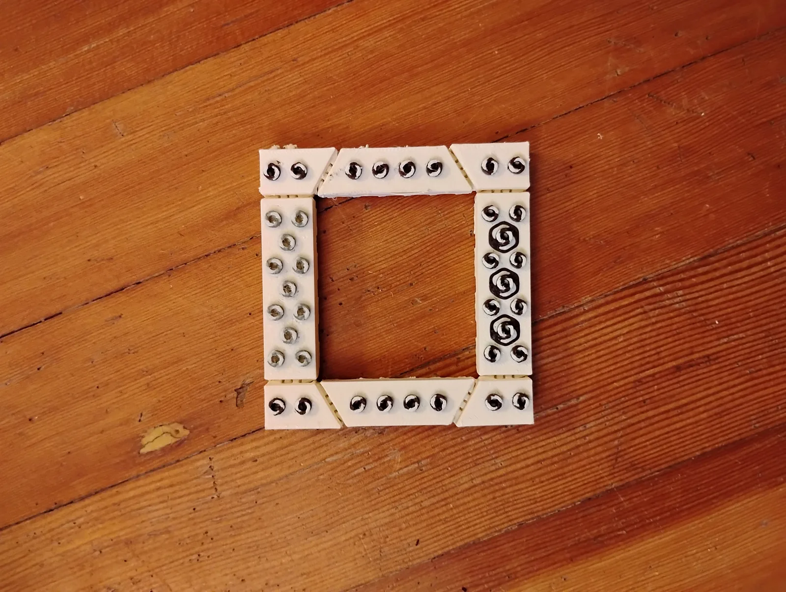
Photos: model bricks, 2026.
Bridging the courses
A double-height brick spans two courses and ties them together, so a stack of rings behaves as one body rather than a pile of loose layers. Turn the bridges off in the builder and the courses come apart.
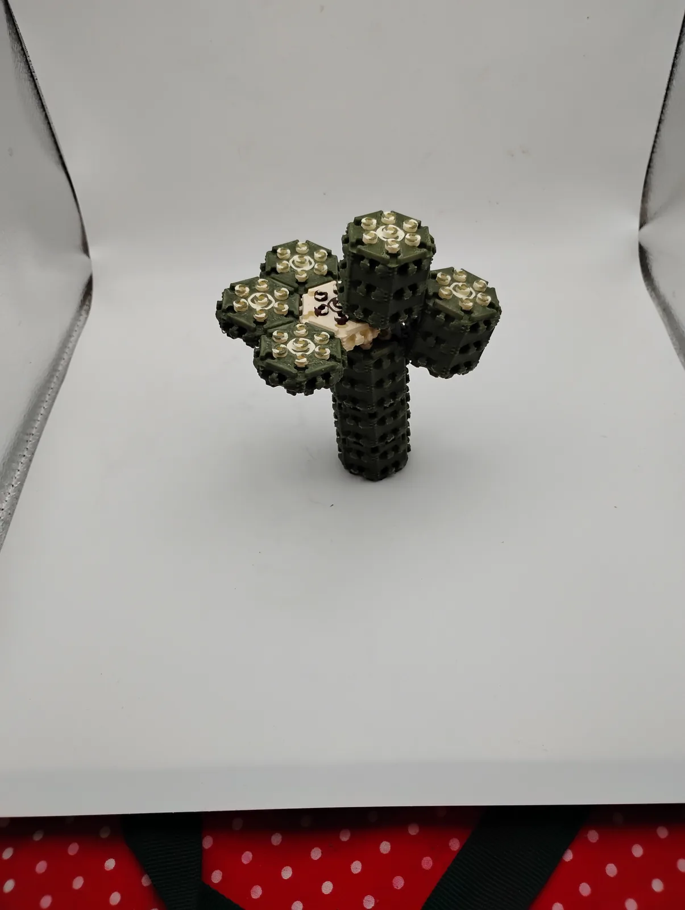
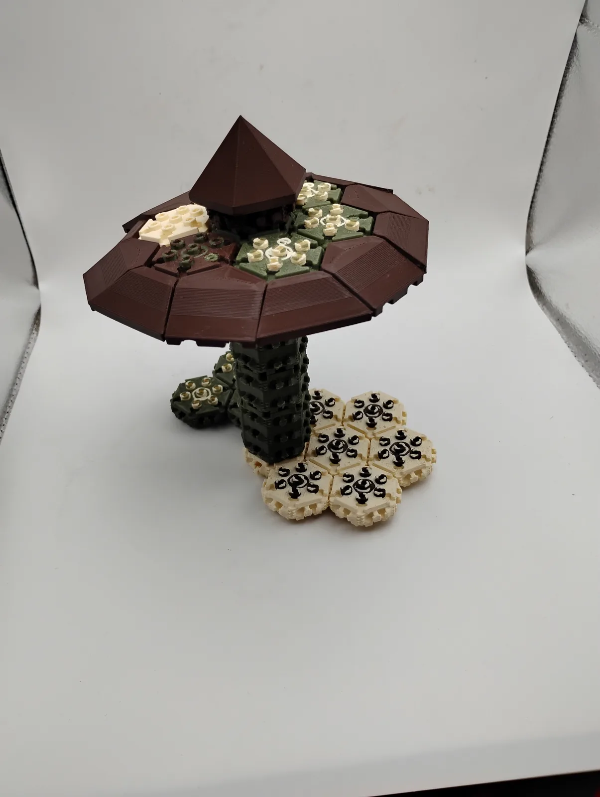
Photos: model bricks, 2026.
Vertical tension cables
Bricks resist compression well and tension poorly. Vertical cables run through the holes at the corners of the bricks, from the top course to the bottom, and squeeze the courses tightly together. That turns a stack of loose layers into a rigid structure that carries point loads and holds together in a swell. Cables are tightened, inspected and replaced from above.
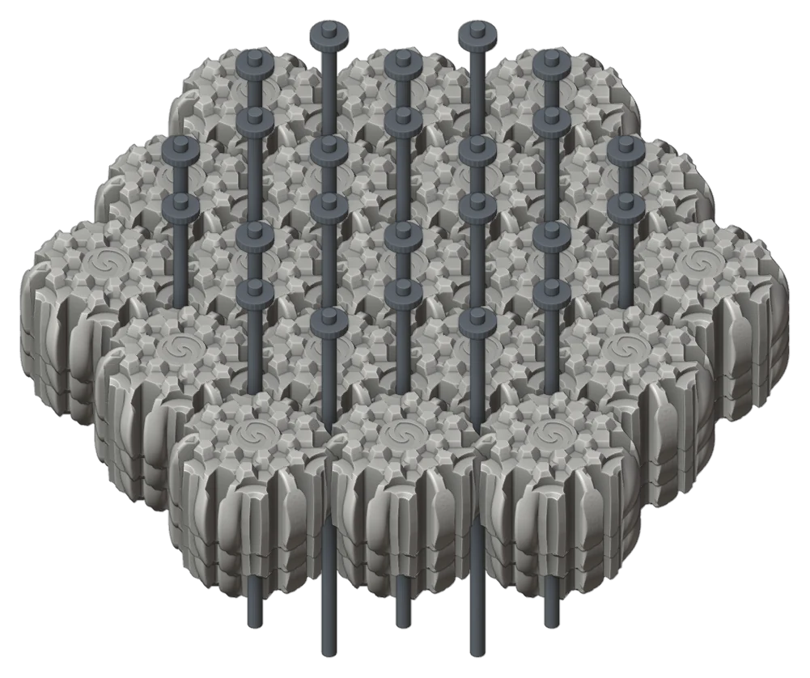
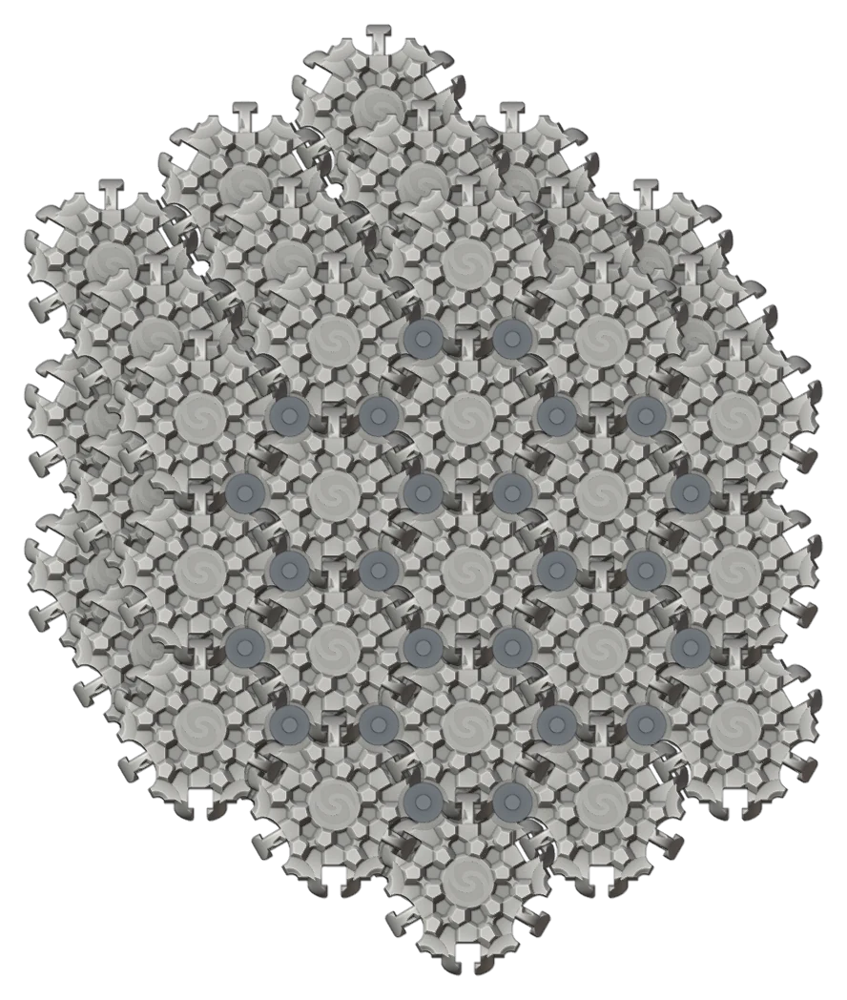
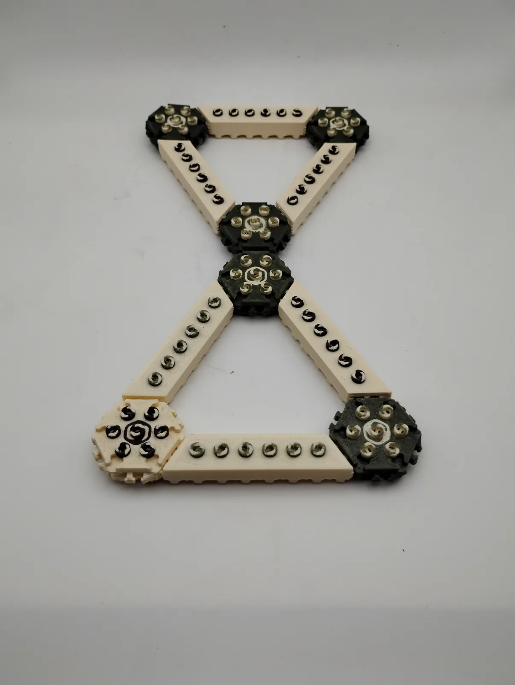
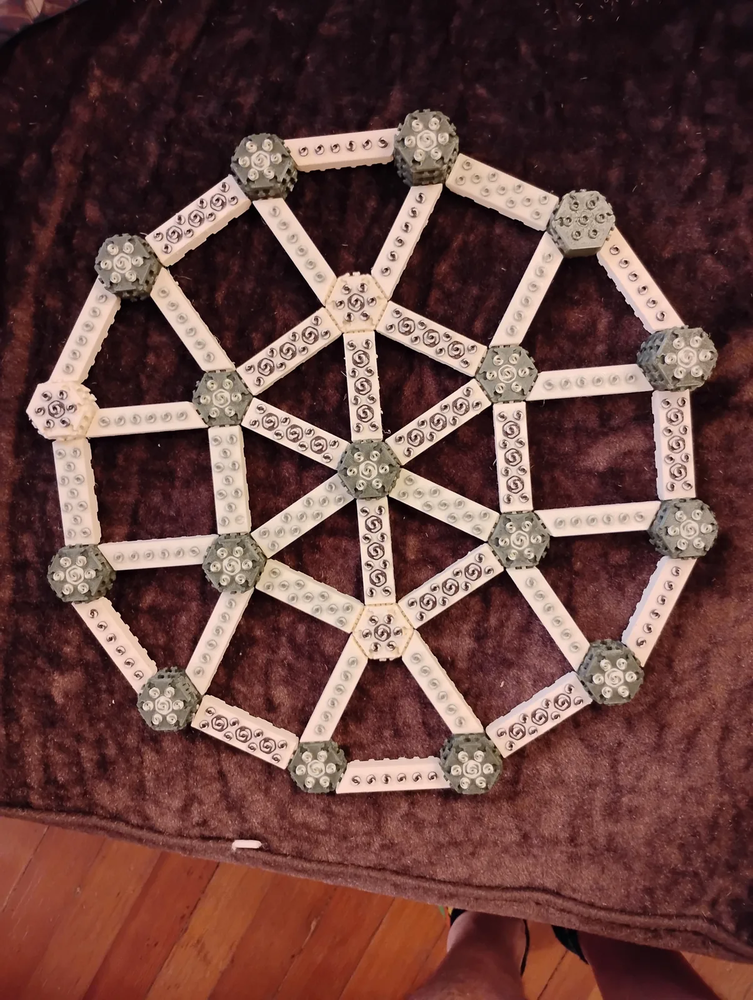
Photos: model bricks, 2026.
Gel-sealed cavities
Where two bricks lock together there is a gap. Fill that gap with a gel and let it harden, and the joint is sealed: the mat becomes watertight and the cavity between the bricks gives more buoyancy. Tension cables make the structure rigid; the gel makes it impermeable.
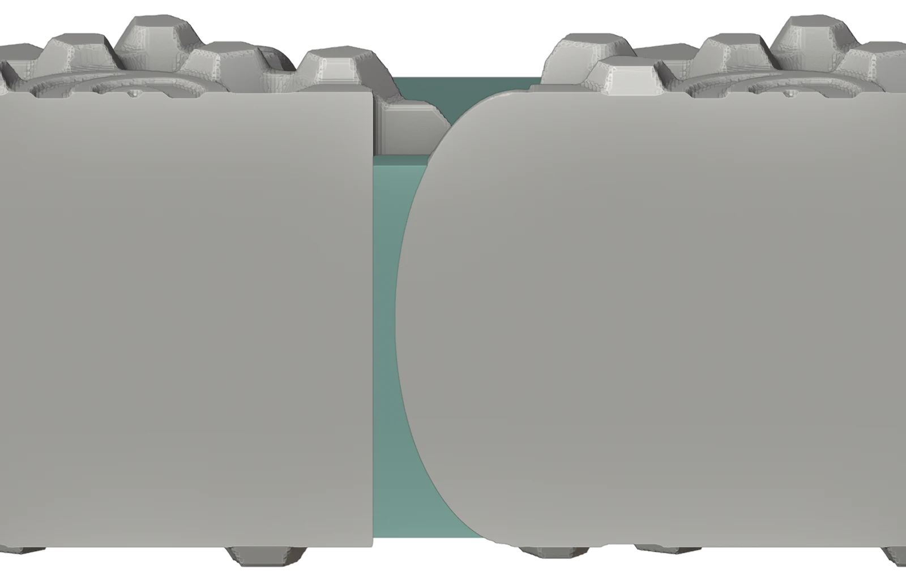
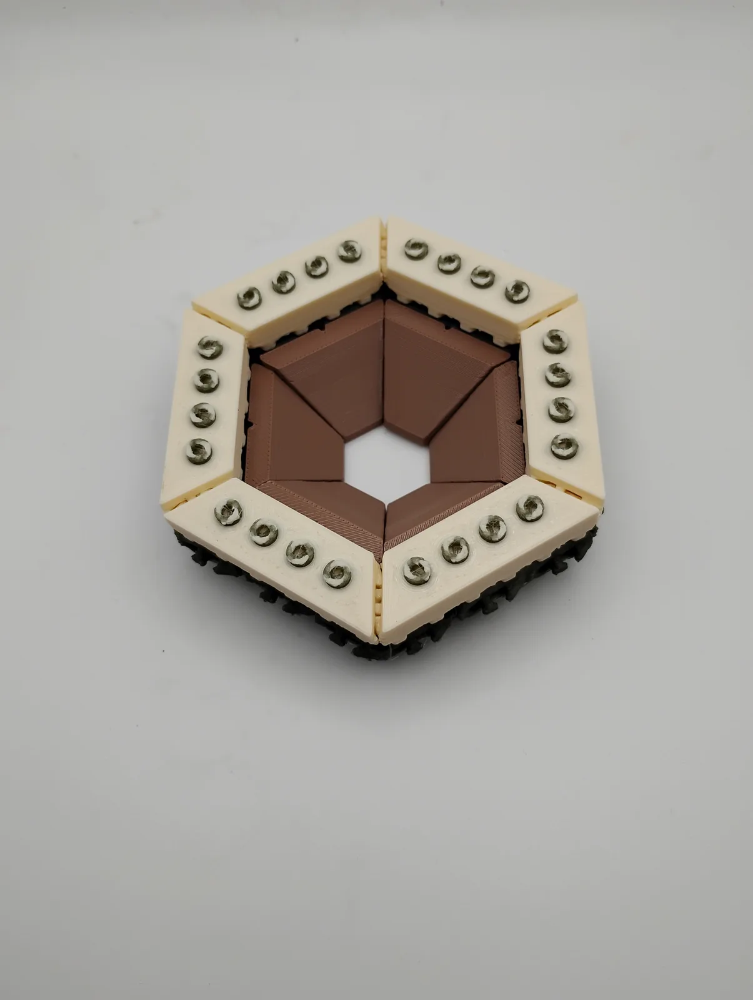

Photos: model bricks, 2026.
Material technology
A light mineral core, a dense mineral shell, organic fibre throughout.
The material has two jobs that pull against each other. It has to float, and it has to carry the forces that pass between bricks. We give each job to a different part of the brick.
Core
A low-density mineral foam. It supplies most of the buoyancy. The lighter the core, the more a structure can carry.
Shell
A denser mineral layer that protects the core and carries contact loads, thickest where bricks grip one another. A mineral coating goes over it.
Fibre
Organic fibre remains an important part of the composite. The fibres mineralize into an internal scaffolding which gives the brick strength and flexibility. Flax, hemp and kelp all work.
Why mineral
Mineral binders cure without the clinker that gives Portland cement its carbon footprint, and seawater does not eat them the way it eats reinforced concrete. Mineralizing agents mixed with the fibres crystallize as water slowly permeates, so the brick becomes a self-healing, stone-like matrix and gets stronger with age. The fibre inside is sequestered carbon: each brick stores more than its own weight in CO2.